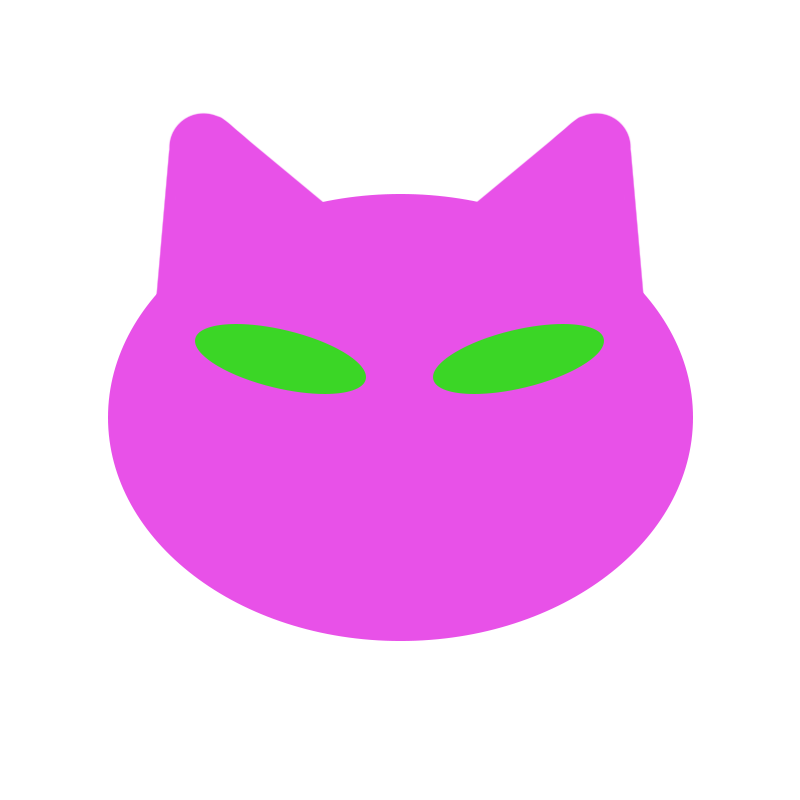
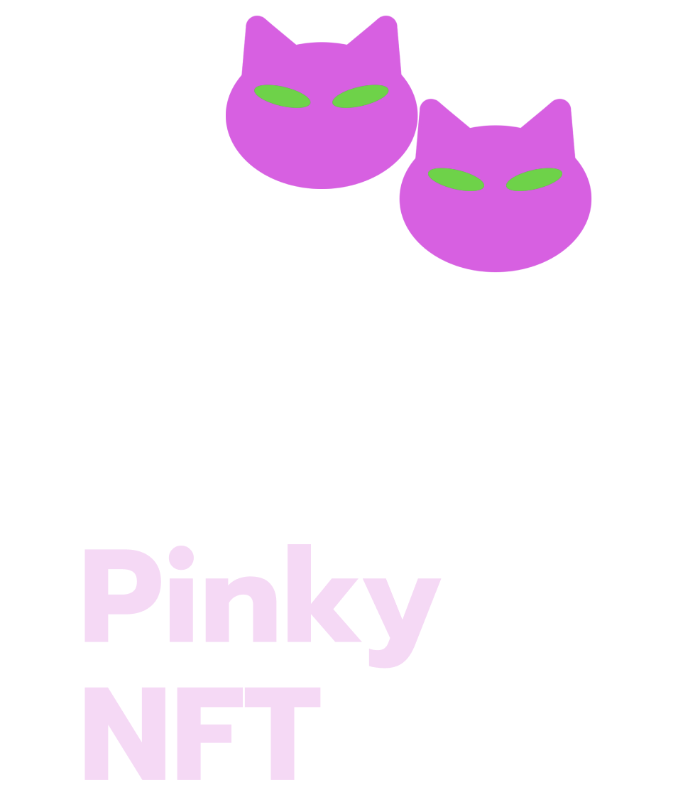
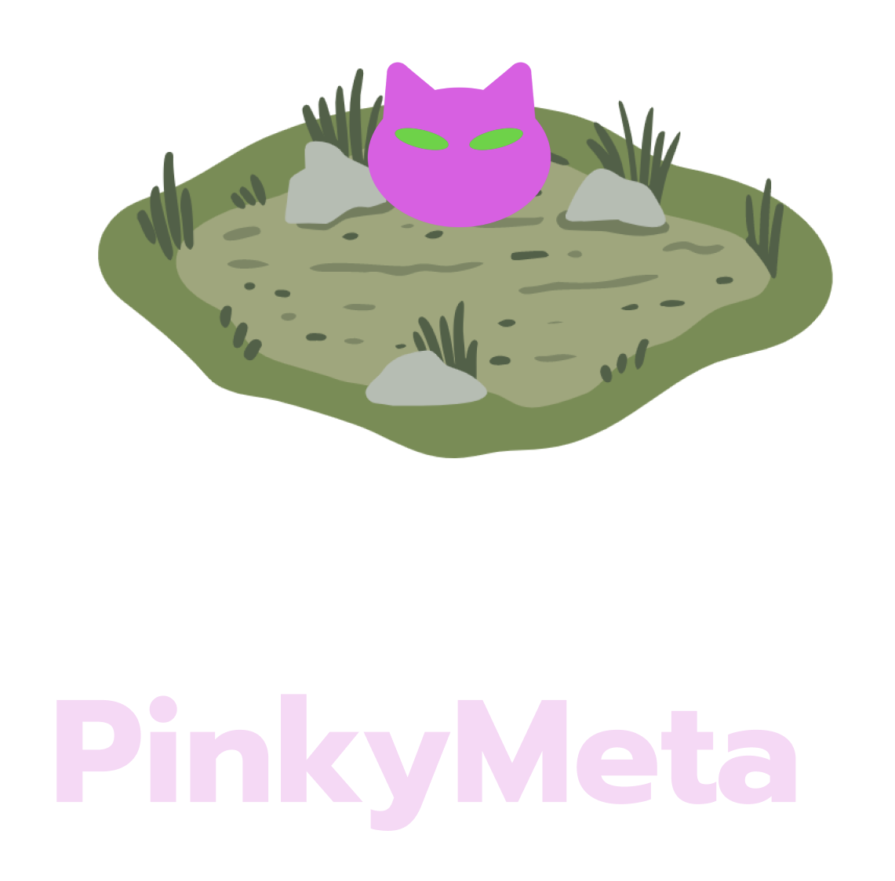
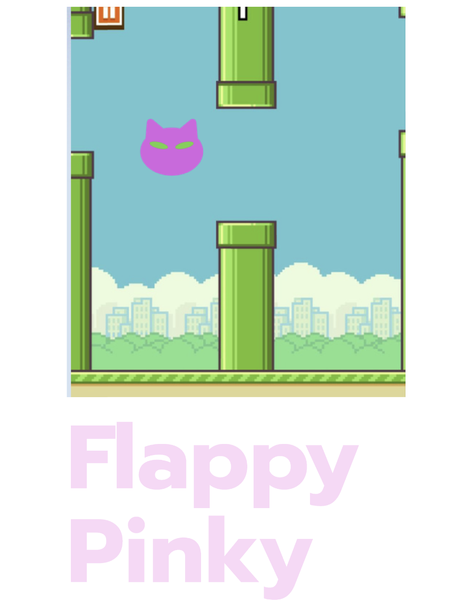
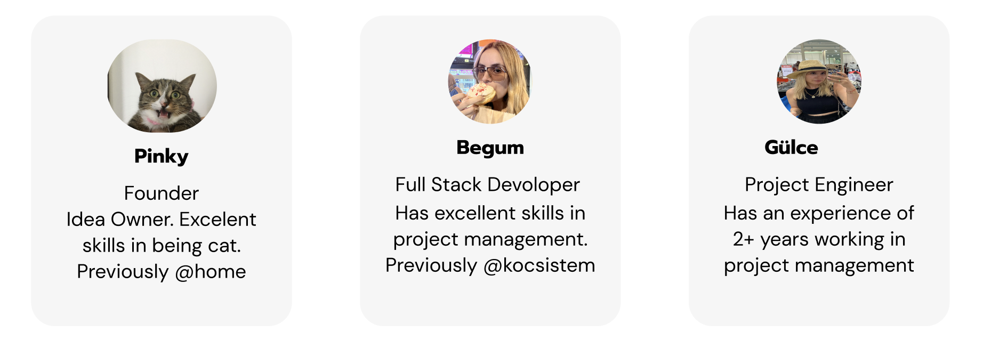

Home
About
Future Works
Team
Blog
Donate Pinky
Do Good For Everyone
From now on we are doing the best to help. Pinky Token is here to unite all the charities to do better
Explore the PinkyPaper
About Pinky
Based on Istanbul, the number of cats living on the streets is estimated to be 125 thousand according to the researches
Pinky Token Project is an organization that will be implemented for stray cats for the first time in Turkey
Future Pinky Works



Meet The Team

Join PinkyCommunity
Join Telegram